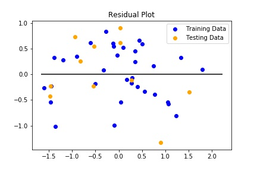
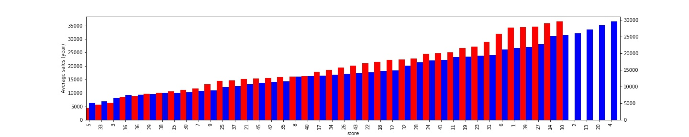
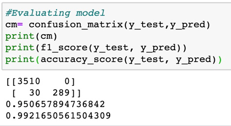
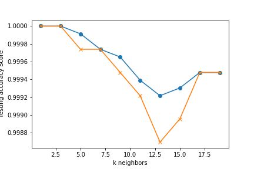

The goal of this model was to predict how markdowns effect weekly sales.
The X_test_scaled and y_test_scaled from the model were used to calculate the R2 Value and Mean Standard Error. The R2 result in this model shows that 74% of the variance for weekly sales is explained by markdowns while the MSE shows 38% error.
Our goal for using this algorithm is to show how it can be used for classification. Since our only categorical values were "Isholiday": True/False weekly sales and markdowns were used to prefict whether "it is a holiday" or "isnt a holiday.""
This bar graph displays which stores have the greatest and least average yearly sales for the years 2011 and 2012. Five stores are used for the KNN-clasifier algorithm.
1. The top 2 stores with max sales(10,14).
2. The top 2 stores with min sales (5,33).
3. One store with average sales (28).
According to the confusion matrix we can see that 3510 of predicted sales and markdowns are not on holidays and 289 are on holidays. Furthermore, there are 30 sales and markdowns not on holidays that are incorrect.
The f_1 score is at a 95% accuracy and the accuracy score is at 99% which is really high. According to the KNN algorithm our model is at 99% accuracy.
 